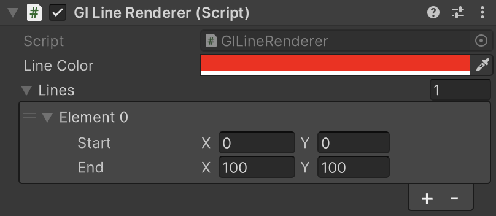

GlLineRenderer
OnPostRender() で指定座標への GL ライン描画を行います。
namespace GarageKit
[RequireComponent(typeof(Camera))]
public class GlLineRenderer : MonoBehaviour
Inheritance
GlLineRenderer -> MonoBehaviour
Inspector
Properties
| member | type | description |
|---|---|---|
| lineColor | Color | 描画ラインの色 |
| lines | LineData[] | 描画ラインの座標リスト |
| lineMaterial | Material | 描画用マテリアル |
Methods
ライン座標の更新
public void UpdateLine(int id, Vector2 start, Vector2 end)
LineData
描画ライン座標の構造体
namespace GarageKit
[Serializable]
public class LineData
Properties
| member | type | description |
|---|---|---|
| start | Vector2 | 開始点 |
| end | Vector2 | 終了点 |